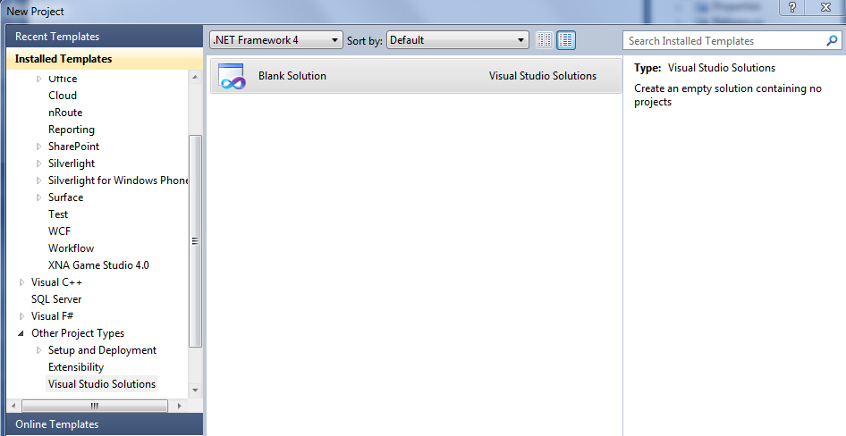
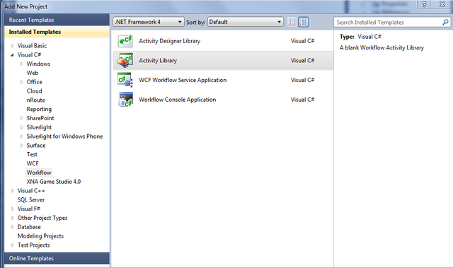
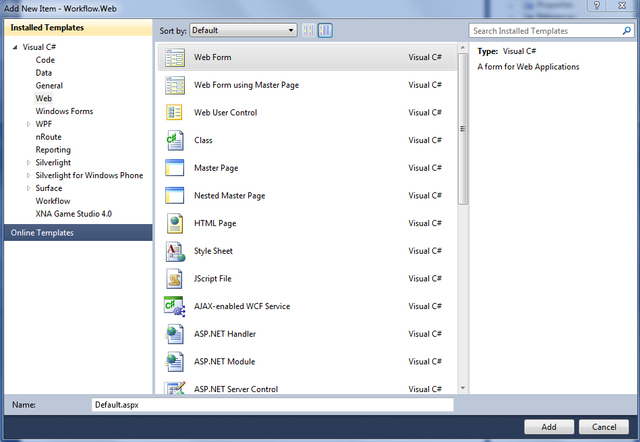
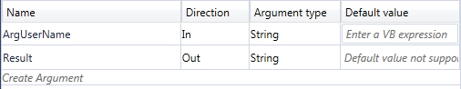
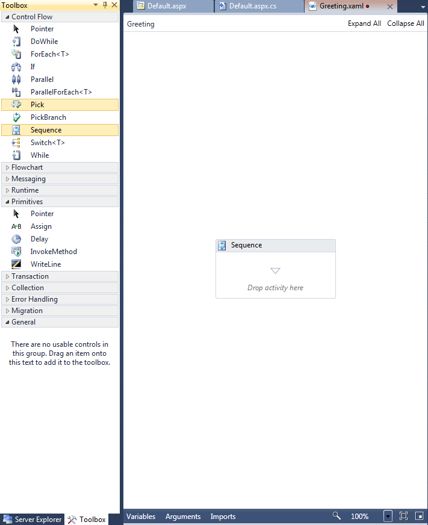
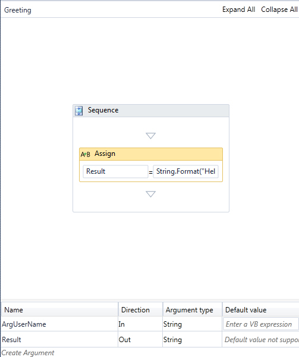

Getting Started: Windows Workflow Foundation and ASP.NET
Introduction
Windows Workflow Foundation is a great technology for creating workflows. It can be used in combination with different technologies, for example SharePoint, WCF, etc. In this article we will combine the Windows Workflow Foundation with ASP.NET.
This is the sample solution for the TechNet Wiki article Gettings Started: Windows Workflow Foundation. This article describes the easy combination of ASP.NET and Windows Workflow Foundation.
You will learn how to build a simple workflow with an input and an output and how to integrate this workflow in a simple ASP.NET application.
The download contains the code files of the sample ASP.NET website and Windows Workflow foundation workflow which are used in the greeting example of this article.
The Scenario
To hold things easy, we will create a very simple greeting application. The user will type in his name into a TextBox, clicks a button and a greeting with his name will appear. Sounds simple? It is!
File - New - Project
Start by creating an empty Visual Studio Solution:

Name it whatever you want. We will now add two projects to this solution - An ASP.NET Empty Web Application (Workflow.Web) and an Activitiy Library (WorkflowLibrary).


Set it up
On the side of our Workflow
For now, just delete the Activity1.xaml file.
On the side of our Website
Create a new Web Form and name it Default.aspx:

We need four controls on our site:
- A Label, which only shows "Your name: "; no more functionality
- A TextBox, where the user can type in his name
- A Button, which will be trigger the workflow
- A Label, which displays the result of the workflow, our greeting
The code is unspectacular; you only need a click event on the Button control:
<%@ Page Language="C# AutoEventWirkup="true" CodeBhind="Default.aspx.cs" Inherits="Workflow.Web.Default" %>
<!DOCTYPE html PUBLIC "-//W3C//DTD XHTML 1.0 Transitional//EN" "http://www.w3.org/TR/xhtml1/DTD/xhtml1-transitional.dtd">
<html xmlns="http://www.w3.org/1999/xhtml">
<head runat="server">
<title></title>
</head>
<body>
<form id="form1" runat="server">
<div>
<asp:Label Text="Your name: " runat="server" />
<asp:TextBox ID="TextBoxName" runat="server" />
<asp:Button ID="ButtonCreateGreeting" Text="Create greeting" runat="server" onclick="ButtonCreateGreeting_Click" />
<br />
<asp:Label ID="LabelGreeting" Text="" runat="server" />
</div>
</form>
</body>
</html>
<%@ Page Language="C# AutoEventWirkup="true" CodeBhind="Default.aspx.cs" Inherits="Workflow.Web.Default" %> <!DOCTYPE html PUBLIC "-//W3C//DTD XHTML 1.0 Transitional//EN" "http://www.w3.org/TR/xhtml1/DTD/xhtml1-transitional.dtd"> <html xmlns="http://www.w3.org/1999/xhtml"> <head runat="server"> <title></title> </head> <body> <form id="form1" runat="server"> <div> <asp:Label Text="Your name: " runat="server" /> <asp:TextBox ID="TextBoxName" runat="server" /> <asp:Button ID="ButtonCreateGreeting" Text="Create greeting" runat="server" onclick="ButtonCreateGreeting_Click" /> <br /> <asp:Label ID="LabelGreeting" Text="" runat="server" /> </div> </form> </body> </html>
Create the Workflow
At the beginning, create a new activity and name it Greeting.xaml. First we need an In argument and an Out argument. The In argument will take the name of our user. The Out argument will hold the greeting and will be assigned to the greeting label on our website.
Open the Arguments tab at the bottom of the designer. The first argument has the name ArgUserName, the direction In and the Argument type String. The second argument takes the name Result, the direction Out and the Argument type String, too.
In both cases you can leave the cell for the Default value empty. The Result will look like this:

Add a Sequence Activity to it. The Sequence Activity ensures that the child activities runs according to a single defined ordering.

Inside the Sequence Activity add an Assign Activity. This activity will assign the greeting to our earlier created Result argument.
The To property will be our Result argument. The Value property can be created with the Expression Editor. The next picture shows the expression.

Please note, every expression in the Workflow Designer must be a Visual Basic expression.
The result should look as follows:

Combine it
To complete our application, add a reference to the WorkflowLibrary in our web application. We also need the WorkflowInvoker class, so add a reference to System.Activities to our web application.
In the click method of our button add the following code:
Imports System.Activities Imports WorkflowLibrary Public Class _Default Inherits System.Web.UI.Page Protected Sub Page_Load(ByVal sender As Object, ByVal e As System.EventArgs) Handles Me.Load End Sub Protected Sub ButtonCreateGreeting_Click(ByVal sender As Object, ByVal e As EventArgs) Handles ButtonCreateGreeting.Click Dim username As String = TextBoxName.Text Dim greeting As Greeting = New Greeting With { .ArgUserName = username } Dim results As IDictionary(Of String, Object) = WorkflowInvoker.Invoke(greeting) LabelGreeting.Text = results("Result").ToString() End Sub End Class
using System; using System.Activities; using System.Collection.Generic; using WorkflowLibrary; namespace Workflow.Web { public partial class Default : System.Web.UI.Page { protected void Page_Load(object sender, EventArgs e) { } protected void ButtonCreateGreeting_Click(object sender, EventArgs e) { string username = TextBoxName.Text; Greeting greeting = new Greeting { ArgUserName = username }; IDictionary<string, object> results = WorkflowInvoker.Invoke(greeting); LabelGreeting.Text = results["Result"].ToString() } } }
Imports System.Activities Imports WorkflowLibrary Public Class _Default Inherits System.Web.UI.Page Protected Sub Page_Load(ByVal sender As Object, ByVal e As System.EventArgs) Handles Me.Load End Sub Protected Sub ButtonCreateGreeting_Click(ByVal sender As Object, ByVal e As EventArgs) Handles ButtonCreateGreeting.Click Dim username As String = TextBoxName.Text Dim greeting As Greeting = New Greeting With { .ArgUserName = username } Dim results As IDictionary(Of String, Object) = WorkflowInvoker.Invoke(greeting) LabelGreeting.Text = results("Result").ToString() End Sub End Class
Does it looks light magic? Not really.
First we retrieve the entered name from the TextBox. Next we need an instance of our workflow and pass in the username as the In argument. To invoke our Workflow we call the Invoke-method with our workflow instance. It retrieves the Out arguments as an Dictionary, where the key will be a string and the value an object. As the last thing we just have to get our Result argument out of the Dictionary and assign it to our greeting Label.
That's it! Run the project! The result should look like this:

Lessons Learned
We have seen how to create a simple workflow with In and Out arguments and how values could be assigned. We have also seen how to invoke a workflow, how to pass in arguments and how to retrieve arguments from the workflow. At the UI side was nothing special and you can work similar in other technologies, such as Silverlight.